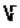

Section 1: Introductions
Hello and welcome to the Kerbal Space Program Startup Guide. We are the last two CEOs of the Space Center, before you. You may have come here to gain insight into why your rockets keep exploding, or perhaps because you can’t figure out how to stay in orbit. We know those Kerbals and Kerbalinas are counting on you to get them into space so we’re to help. Everything from starting a game to returning to Kerbin from orbit is in this guide.
Before introducing you to the mechanics of the game, there is a brief welcome speech every employee must attend including a tour around the Space Center campus, Kerbin, and the planetary system. There is also a meet and greet with the higher ups you will be interacting with. You can get to work after the festivities. Be sure to grab some cake for the road.
When it’s time to start the game, we’re here for you. The second section in here was created with you in mind. There are quite a few modes, difficulties, and sliders to go through. Some of the more basic aspects of the game such as making Funds and Science are discussed in the fourth and fifth sections more formally. Don’t worry, you don’t have to take notes; the slides will be posted online and in this guide.
The team has put together a detailed list of rocketry parts and how to use them. This section includes instructions on how to build a basic rocket. Some experimentation may be involved, don’t worry about the little Kerbals walking below your rockets, they won’t judge you. There is important information about your first launch and flight.
Once you have the basics of building a rocket down, we teach you more complex ideas behind rocketry such as staging and decoupling. The last two methods we have to teach you are how to get out of orbit once there and how to land without exploding. We recognize these are quite difficult to do on your own, even with help. The goal here is to get you safely into orbit and return back to Kerbin. However, in the end it is up to you to create the ship that gets into space and keep it there. Good luck.
Best Wishes,
Chris and Riona
1.1: Starting a New Game
Great! You want to start a new game but aren’t sure which type of game you want to choose, or perhaps how some of the options truly affect the difficulty of the game.
- Click Start Game. The Start Game screen comes into view.
- Click Start Game. The Start New Game dialog box appears.
- Enter a Player Name.
- Click on the Flag button. The Flag Choice dialog box appears.
- Select the flag you with to represent you. (Click ____ to exit)
- Choose the Game Mode you wish to play in. For the purposes of this guide, we will be going with Career Mode.
- General Options affect common gameplay events such as flights, loading, respawning, and facilities.
- Advanced Options affect the forgiving was of the environment, penalties, and rewards.
- Career Options affect the Funds (), Science (⚛), and Reputation (★) you begin with. These are the three key elements you must juggle in the game.
- Click the Difficulty Options button. The Game Difficulty dialog box appears.
- Sandbox is the mode where you have unlimited supplies.
- Science is the mode where you have unlimited Funds and don't have to worry about your Reputation, it's all about ‘dem Science points.
- Career is the mode where everything is limited and you must juggle your Science, Funds, and Reputation.
- Select one of the preset difficulties: Easy, Normal, Moderate, or Hard.
- Make changes within the General Options, Advanced Options, and Career Options.
- Click the Accept button when you are satisfied with the difficulty.
- Click the Start! Button.
The Ins and Outs of Rocket Science
Types of Rocket Parts
- Command Modules: These are the brain of the rocket. Whether or not it is a smart brain is really up to you. Command modules can be broadly put into two sub-categories: Manned and unmanned. Manned command modules need a certain number of astronauts inside them to operate. Without an astronaut in the command module, the player cannot control the rocket at all. Unmanned modules do not contain astronauts, and instead use electricity to control the rocket. No electricity, no control. Each of these options has pros and cons, but in the beginning you will only have access to manned modules.
- Fuel Tanks: Fuel is arguably the most important resource you have. Without fuel you cannot go anywhere, and in some cases you cannot make navigational adjustments. There are four types of fuel that you can use, but only three of them are accessible in this menu:
- Solid Fuel: Solid fuel is only found in solid fuel boosters and is not found in this menu. What makes it different is that once you have activated a solid fuel booster, you cannot turn it off. The fuel burns at 100% burn until there is no more to burn.
- Liquid Fuel: Liquid fuel is the most common type of fuel you will be working with. Liquid fuel can be throttled as necessary so it is used for mid-to-late stages of your flight for more fine points of navigation. Liquid fuel comes in two parts: liquid fuel and oxidizer. These two resources burn at a proportional rate, and each fuel tank has the correct ratios of fuel to oxidizer, so it is rarely a consideration, but if for some reason your rocket stops moving despite having some fuel left it may have to do with a lack of oxidizer.
- Monopropellant: Monopropellant is liquid fuel without oxidizer and is used as fuel for Reaction Control System (RCS) thrusters.
- Xenon Gas: Xenon gas tanks are used to fuel ion engines.
- Engines: As easy as it can be to consider engines as the workhorse of rockets with little variation (we want the biggest engines to make the rocket go fast, right?), there are many nuances to engines, with many different types of engines, all with differing capabilities. Each engine utilizes one of the fuel types as discussed above, and each of these engine types has pros and cons as well and some general archetypes of use.
- Solid Fuel Booster: Due to the high power of a solid fuel booster and the fact that it cannot be turned off until no fuel is left, solid fuel boosters are most often used to begin a flight. They create incredible amounts of lift and acceleration and create a solid (haha) foundation for the remainder of the flight. Often a solid fuel booster is paired with a decoupler to allow for it to be easily jettisoned once it has been used up.
- Liquid Fuel Booster: As noted in the section on liquid fuel tanks, the key component of liquid fuel is that it can be throttled. Liquid fuel engines allow for much more precision at the cost of power. A liquid engine set to max will not give the same level of acceleration as a solid fuel engine, but once a high velocity has been established, the liquid fuel engine will easily be able to maintain that velocity.
- RCS Thruster: Reaction Control System thrusters are small, radial-mounted thrusters designed to use a small boost to help turn the ship. These thrusters use monopropellant to generate small thrusts that assist you in turning or rotating your ship.
- Ion Engines: Ion engines are small and run on either xenon gas or electricity. Because they can run on electricity many ion engines are used in space probes or in rockets that will have to be in space for a long time where being able to refuel with solar power allows for near endless usage. Ion engines are weak, though, especially in atmospheric conditions and it is almost impossible to launch a rocket with only an ion engine.
- Command and Control: Command and control is all about the parts that help you steer your rocket. Stability Augmentation System (SAS) parts are found here along with inline reaction wheels. Inline reaction wheels provide more torque when turning, which results in a more responsive ship..
- Structural: Structural contains everything that helps keep the spaceship together (or in some cases, precisely take it apart). Structural contains decouplers, which use small explosions to disconnect and push parts off and away from the spaceship. This is especially useful for parts of the ship that are no longer of use, such as empty fuel tanks or empty solid state boosters. Structural also contains adapters, couplers, and struts, all of which help keep a rocket stable and together. Structure also contains the stability enhancer, which helps keep the rocket upright before launch.
- Aerodynamics: Aerodynamics contains all of the parts needed to help give your ship more aerodynamic capabilities. This includes fins, wings, nose cones, and much more.
- Utility: Utility is a massive category, and mostly contains advanced spaceship parts. The more basic utility features include landing gears, parachutes, ladders, batteries and electric generators, lights, wheels, and radiators. There are more features, but these are for advanced missions that this guide will not be covering.
- Science: Science contains all of the instruments used to conduct science experiments and get science points. These can range from things like mystery goo to thermometers to barometers. Importantly, science also contains communication systems, which help transmit data back to Kerbin.
| Solid Fuel | Liquid Fuel | Monopropellant | Xenon Gas |
|---|---|---|---|
 |
 |
 |
 |
Section 2: Your First Launch
2.1: Building Your First Rocket
Now that we know our way around the interface, we can start to build our first rocket. This rocket will be basic, but it will follow the same building paradigms that will show up in all subsequent rockets. To begin building your rocket, from the main game screen, click on the Vehicle Assembly Building.
- We begin with the command module. All we have available to us is the Mk1 Command Pod at the start so we will place that in our canvas.
- There are two options available for how to attach the RT-5 "Flea" Solid Fuel Booster.
- Explosive Decoupling: This means just stacking the boosters on top of one another. When the bottom-most booster is depleted, the next one will fire off and after a few seconds, the heat will explode the depleted booster and the rocket will continue upwards. This will require creating a new stage for each booster. Go to the Staging section to read more about staging.
- Girder-Attached Boosters: This is based around placing one booster and then setting Symmetry to 3 and placing three Modular Girder Segments around that middle booster, then finally placing a booster on each girder segment. This will be achieved using the symmetry option.
- Place an Mk16 Parachute on the top of the command module.
- Place some Basic Fins on either the middle booster or on the three girder-attached boosters.
- If you would like, place a Mystery Goo Containment Unit on the command module. This unit helps you get more science points, which gives you more parts at a faster rate.
Now that you have a rocket, it is time to launch it!
2.2: The Launch Screen
You will simply be launching your rocket up into the air this time. Since there is really no way to get it much higher than a few thousand meters, the purpose of this launch (and likely one more launch after) is to get you acquainted with the process of actually piloting your rocket. To get started, click on the green Launch button in the top right corner of the Vehicle Assembly Screen.
We will quickly explain the Launch Screen before going forward with the launch:
- In the top left corner is the Time Warp Indicator. This lets you know how long the current mission has been going on for and if you are using the time warp function. With no time warp, there should be no arrows showing. When you do time warp (Comma and Period keys), arrows will show in the indicator to indicate how fast you are warping.
- In the top middle is the altimeter. This tells you what your velocity, height, and atmospheric status is. You can also control geared parts, lights, and brakes with this. The ticker numbers indicate your height, and are measured in meters and then can roll over to measure in kilometers if you are sufficiently far out. The grey indicator is your velocity. Positive velocity means that you are going forwards or up at speed. Negative velocity means you are going backwards or down at speed. The atmosphere gauge indicates which level of the atmosphere you are in, with fully right being on the ground and fully left being in space outside of atmosphere (70,000 meters). If you hover over the top of the dashboard options to access the Recover Vessel and Space Center options. These options let you go back to the main game menu and either recover the rocket and crew (along with any retrieved science) if they have landed anywhere on Kerbin or just go back to the space center and leave the rocket where it is. The yellow and black striped section on the left of the dashboard can be hovered over as well to reveal the Abort Mission button, which ends the mission immediately, not recovering anything.
- The top right corner contains information such as fuel levels, rocket information, communications from mission control, and contracts. These can all be hovered over to reveal that information.
- The bottom right corner contains profiles for all of your Kerbals. Hovering over their portraits will give you the View and EVA options. View lets you see from their perspective inside the command module. This view can be exited by default by pressing the C key. EVA sends the Kerbal outside of the rocket, and lets them perform exploratory operations in space or on the ground. Avoid going EVA while the rocket is in motion.
- The bottom middle has the second dashboard. This is dominated by the Directional Ball. The Directional Ball is designed for steering. If the rocket is facing directly upwards then the ball will be set to 0 in the middle of the blue half. Moving the rocket in any direction causes the ball to move accordingly. The ball notates the degrees in which the rocket is turning. Blue means the rocket is facing upwards, orange means the rocket is facing downwards. There are two green symbols on the ball which we will get into later when getting into orbit, but for now just try to keep the rocket from turning too much. To the right side of the ball is the G-Force Indicator. G-Force will not be a concern for us, but if the G-Force Indicator stays in the red for too long, our Kerbals can die and certain rocket parts can be destroyed. To the left side of the ball is the Throttle. This is controlled with the left-side Shift and Control keys by default. Since we are not using liquid fuel yet, the throttle controls nothing, but in the future we will be using it quite extensively.
- The bottom-left contains directional indicators such as pitch, roll, and yaw. These are primarily used for docking, which we will not be covering in this guide.

2.3: The Actual Launch!
Time to fly! Do not be worried if your rocket crashes or spins out of control. Your first few launches can be difficult as you adjust to the controls and the realities of piloting a rocket.
- Press Space to activate the solid fuel boosters. These will boost until they are out of fuel. Depending on which type of rocket you chose to make you will either wait until they all run out or keep pressing Space to activate the next booster on the line.
- Right-click on the command module and click Crew Report. The science window appears.
- Click Keep Experiment. This will give you science points when you recover the vessel. Do the same process with the Mystery Goo Containment Unit if you attached it.
- When all of the boosters are out of fuel and your velocity is heading back down to 0, press Space one more time to activate your parachute. The parachute will deploy and slow down your rocket once you reach 1000 meters above the ground.
- Your rocket will hit the ground and it is very likely that your boosters will explode, but your command module will stay intact.
- Click EVA on your Kerbal’s portrait to send them out. Have them let go of the ladder.
- Right-click on your Kerbal and then click EVA Report. The science window appears.
- Click Keep Experiment.
- Hover to the top of the altimeter and click Recover Vessel. You return to the main game screen.
Do this launch a few more times to practice and get more science points. When you have unlocked Engineering 101 and Basic Rocketry you may continue on to the next section of this guide. Happy flying!
Section 3: Running a Space Program
3.1: Making and Using Science Points
To progress in KSP’s Career mode, you need to upgrade your Technology. To upgrade your technology, you must collect Science points. There are a number of ways to collect these points ranging from walking on Kerbin to landing on the Mun.
- Open a new or existing game file.
- Click on the Research and Development building.
- Click the Science Archives button in the upper left corner of the window to keep track of science progress.
- Here are the many different ways to get science:
- Situations are based on flights and landings. Different celestial bodies affect what flight situations you can experience. There are two types of landings: landed, when a ship has landed and
- Activities are experiments you can complete, for example an Extra-vehicular Activity. Certain activities are based on the celestial body or biome.
- Biomes are types of surfaces on celestial bodies, for example, deserts, mountains, oceans, the poles of the planet.
- Click on the Research and Development building to open technology tree.
- Select the node you wish to unlock with Science.
- Click the Research button. The node is unlocked and you have access to the nodes branching off it.
You now know how to make and use Science!
3.2: Earning Funds
Building, flying, and maintaining rockets is not a cheap business so you’re going to have to make money somehow. Fulfilling contracts with various companies and bodies of government through Mission Control is the main way to earn Funds.
- Enter the Kerbal Space Center map.
- Click on the Mission Control building. The Contract interface appears with a list of contracts.
- Click the Available tab to browse new contracts. Click the Active tab to check the contracts you are currently working on. Click the Archives tab to see past contracts.
- Select the contract you want to enter. The contract details appear on the right side of the interface.
- The Advance is the Funds you receive upon accepting the contract.
- Completion is the rewards you will receive in Funds, Science, and Reputation, respectively, upon completion of the Objectives.
- The Funds and Reputation are subtracted upon the Failure of a contract by way of expiration or cancellation.
- Click the Accept Contract button. The contract is available in the Active tab.
- Complete the contract objectives to receive the Completion awards.
Now you’re rolling in the Funds! Let's get back to building rockets.
Section 4: Getting to Space!
4.1: Building Your Next Rocket
So after a few times going up and then falling back down with nothing but a few solid boosters hopefully you have acquired enough science points to upgrade to liquid fuel boosters and fuel tanks, as well as a decoupler. These upgrades are found in the first two unlockable level of the tech tree found in the R&D building, Basic Rocketry and Engineering 101. This section assumes you have access to the parts from these two levels, so do not begin this until you have unlocked them.
- Place a Mk1 Command Pod on the canvas.
- Place a Mk16 Parachute on top of the command module.
- If you want extra science from your trip (and you likely do), place a SC-9001 Science Jr. under the command pod.
- Place a Communotron 16 on the side of your command pod.
- Place a TR-18A Stack Decoupler. This will segment your rocket. The stack decoupler, when activated, separates your rocket. You will retain control of everything above the decoupler and everything below will be jettisoned.
- Under the decoupler, place about six FL-T100 Fuel Tanks on top of each other. Each of these holds a little bit of fuel for your liquid fuel engine, and they also provide the body of the rocket.
- Place a LV-T30 "Reliant" Liquid Fuel Engine at the bottom of the fuel tanks.
- Place another TR-18A Stack Decoupler below the engine. This creates a casing around the engine that makes it flush with the rest of the rocket’s body. This is a fairing, and when you activate the decoupler the fairing will automatically jettison.
- Finally, place a RT-10 "Hammer" Solid Fuel Booster below the second decoupler.
Your second rocket is complete! This one is considerably more complex than the last one, with a number of segmented parts. Think of each section as a stage, separated by a decoupler, because now we are going to talk about staging.
4.2: Staging
Staging refers to the phases that you use when activating parts of the rocket. You have two boosters on your rocket, so you do not want them both to start at the same time (unless you love explosions (you can love explosions, it’s okay)). In the bottom right-hand corner of the vehicle assembly screen, you can see the current staging setup. The way this works is that the highest number is the first activated staging, and then each smaller one goes next. You will be using four stages. Let us go over how to add stages and move actions between them.
- Hover over the stages. You see a plus sign and minus sign. Click the plus sign to add an empty stage, and do that until you have a total of four stages. If you have more than four, click the minus to remove them until you have four.
- Move the action for the solid fuel booster to stage 3 (you can tell which is which by hovering over the icons and seeing which parts of the rocket are highlighted).
- Move the action for the bottom decoupler and the liquid fuel engine to stage 2.
- Move the action for the top decoupler to stage 1.
- Make sure your parachute is set to stage 0.
Stages can be changed mid-flight as well, but this saves hassle and keeps you from activating everything at once.
With staging set to go, your second rocket is complete!
4.3: Flying to Space
Functionally, flying to space is similar to your first few launches. Point up and go, right? Well, it’s getting a little more complex now. We are using staging and we are capable of changing the intensity of our rockets now. The result is that we are looking at a good transition from simple piloting to the more difficult piloting required to attain orbit.
- Set your throttle to a little less than one-third. Make sure all of your staging is correct. Now is the last chance.
- Press T to activate SAS. If it is not already, set it to Stability Assist to the left of the navigation ball.
- Press Space to activate the solid fuel booster. Let that burn out completely before activating the next stage.
- Press Space once the solid fuel booster burns out to jettison it.
- Press Space to activate the liquid fuel engine. Your throttle is at one-third so it should not be accelerating the rocket any undue amount. The rocket will start decelerating a little but the liquid fuel engine should keep it from falling below ~300. Keep track of this number using the speedometer next to the altimeter.
- Keep your rocket steady while the liquid fuel slowly burns out. You want to at least make it to 70,000 meters, as anything lower is still within Kerbin’s atmosphere.
- At 70,000 meters or higher, right-click the SC-9001 Science Jr. and click Conduct Experiment. The science window appears. Click Send Experiment. This will net you about 18 science points, which at this stage in the game is sizable.
- Right-click on the command pod and click Crew Report. The science window appears. Click Keep Experiment. More science points. Since you are not on the surface, you cannot go EVA.
- Let the rocket run out of fuel and then click Space to jettison the unnecessary rest of the body.
- At this point things can get dicey. If you have not gone too far out into space then you have a better chance of making it to the ground without a heat shield. During re-entry, progress bars appear on all of the parts of your spaceship. These are for overheating. If the bar fills up, the part overheats and explodes. The SC-9001 Science Jr. likely will not make it, which is why we chose to send the data earlier.
- Wait to activate your last stage until the parachute icon in the staging section is no longer colored red or yellow. Otherwise the aero or heat forces may destroy the deployed parachute.
- Press Space to activate the parachute when it is safe to do so.
Congratulations! You have just made it to space and back without exploding (too much)! This can be done a few more times to get enough science to unlock the next parts, which are important for the next section. You will need General Rocketry, Stability, and Survivability.
Section 5: Making Circles... In Space!
5.1: Building an Orbiter
Having made it into space, you are ready for the final part of this guide: getting a circular orbit around Kerbin. This is an important event, because everything you do that will take you outside of Kerbin will require you to be capable of creating an orbit. This is the first skill you will need to successfully perform missions to far-flung planets and moons. This part will go over what is needed to build an orbit-capable rocket. Before doing this section, ensure that you have unlocked General Rocketry, Stability, and Survivability, on top of the technologies described in the previous rocket building section.
- Place a Mk1 Command Pod in the canvas.
- Place a Mk16 Parachute on top of the command pod.
- Place a SC-9001 Science Jr. under the command pod. We will be using the Science Jr. this time not just for science, but also to slightly increase the size of our command section.
- Place a Heat Shield (1.25m) under either the Science Jr. or the command pod.
- Set Symmetry to 3.
- Place a LT-05 Micro Landing Strut on the Science Jr. We use the Science Jr. for this, but in the future struts will often be placed on fuel tanks when you start building landers that need their own small engine.
- Set Symmetry to 1.
- Place a TR-18A Stack Decoupler under the Science Jr.
- Place 5 FL-T200 Fuel Tanks under the stack decoupler.
- Place a LV-T45 "Swivel" Liquid Fuel Engine on the bottom of the rocket.
- Set Symmetry to 3.
- Place a TT-38K Radial Decoupler on the lower third of the rocket.
- Place a BACC "Thumper" Solid Fuel Booster on the decoupler. Make sure that it is fully on the decoupler, as clipping issues can sometimes occur, causing improper separation.
- Place an Aerodynamic Nose Cone on top of the solid fuel booster.
- Place a AV-T1 Winglet in the middle of the solid fuel booster.
- Click on the solid fuel booster you have placed to move it around. Ensure that all three solid fuel boosters and decouplers are set at a height such that the bottom of the solid fuel boosters are as equal as possible with the bottom of the liquid fuel engine.
- Set the staging in this order (from bottom to top):
- Solid Fuel Boosters activate
- Radial Decoupler activates
- Liquid Fuel Engine activates
- Stack Decoupler activates
- Parachute activates
Now you are ready to boldly go and fly into a circle!
5.2: Making an Orbit
This is it. The big one. Making an orbit is the first big step to all other celestial bodies out there. If you can make an orbit, you can fly wherever you need to go, given enough fuel and time. This will be the biggest test of your piloting skills yet, but with a quality orbiter, you too can make it into space.
- Ensure that your staging is correct and that your throttle is set to approximately one-sixth. Press T to activate SAS and set it to Stability Assist.
- Press Space to activate your solid fuel boosters.
- Let the solid fuel boosters burn out. Press Space to jettison them.
- Press Space to activate your liquid fuel engine.
- At this point use the WASD keys to gently nudge your rocket towards 90 degrees. Do not go all the way to 90 degrees, just get a slight tilt. This will help you get a more circular orbit faster.
- Fly your ship. If the velocity is getting low, increase the throttle a bit. Your throttle should never go higher than one-half.
- Kill the throttle around 70 or 80 thousand meters. Press M to enter the map view. In the map view you can see the current path your rocket is taking. Figure out when your rocket will reach Apoapsis (its highest point) and start moving your rocket to be facing about halfway between the 90 degree mark and the blue-orange border on the navigation ball. This will give more horizontal velocity than vertical, helping create a circular orbit while keeping you in space.
- Set the throttle to full around 30 seconds from Apoapsis. The path of your rocket expands dramatically. Keep adjusting minutely until Periapsis appears. Periapsis is the lowest point in your orbit, and it has to exceed 50,000 meters or gravity will be too strong when you reach it.
- Kill the throttle once periapsis is established higher than 50,000 meters. Any extra fuel is precious now.
- With periapsis established you have successfully created an orbit around Kerbin!
- To exit orbit, turn the rocket around. Aim it to face 180 degrees on the orange side of the navigation ball. Do the same process you did to establish orbit except start throttling about 10 seconds from Periapsis. In the map view Periapsis will disappear and your path will begin to intersect with Kerbin again.
- Press Space to jettison the rest of your rocket and prepare for re-entry.
- Set your rocket to face away from the direction it is going, so that the heat shield is facing forward.
- During re-entry make constant adjustments to make sure that the heat shield is taking the brunt of the heat contact.
- Just like in earlier space flights, wait until the parachute icon in staging is not colored red or yellow before deploying.
- Press Space to deploy the parachute.
Upon landing, celebrate! You have gone into space and made an orbit before landing successfully on the ground! This is as far as this guide will go, but not as far as you can go. Get more science, fly more often, and eventually you can build rockets that will take you to the Mun, Minimus, or even Duna and beyond! Happy flying!
Glossary
Kerbin: The home planet of the Kerbals. The surface and physics are much like those on Earth.
Mün: The Mün is the larger of two moons orbiting Kerbin. As Kerbin is comparable to Earth, the Mün is similar Earth’s Moon. This is where the menu screens are shot from.
Minimus: Minimus is the smaller of the two moons orbiting Kerbin.
Kerbol: The star in this planetary system which Kerbin orbits.
Kerbal/Kerbalina: Kerbals/Kerbalinas are the small green species that live on Kerbin.
Kerbonaut: A Kerbonaut is a Kerbal who works as an astronaut.
Science: The point system measuring scientific achievements, usable only to unlock upgrades and new technology.
Funds: The monetary system through which you may purchase rocket pieces, new astronauts, and facility upgrades.
Reputation: Your reputation affects how the outside world views you, i.e. the quality and quantity of the contracts you are offered.
Nodes: Nodes are the levels of technology in the Research and Development tech tree.
EVA (Extra-vehicular Activiy):EVAs are the act of sending a Kerbonaut outside the vessel.
Command Modules: These are the brain of the rocket. Whether or not it is a smart brain is really up to you. Command modules can be broadly put into two sub-categories: Manned and unmanned.
Fuel Tanks: Without fuel you cannot go anywhere, and in some cases you cannot make navigational adjustments. There are four types of fuel that you can use.
Solid Fuel: Solid fuel is a type a fuel wherein once you have activated a solid fuel booster, you cannot turn it off. The fuel burns at 100% burn until there is no more to burn.
Liquid Fuel: Liquid fuel can be throttled as necessary so it is used for mid-to-late stages of your flight for more fine points of navigation. Liquid fuel comes in two parts: liquid fuel and oxidizer.
Monopropellant: Monopropellant is liquid fuel without oxidizer and is used as fuel for Reaction Control System (RCS) thrusters.
Xenon Gas: Xenon gas tanks are used to fuel ion engines.
Engines: Engines are the workhorse of rockets, with some variation all with differing capabilities. Each engine utilizes one of the fuel type.
Solid Fuel Booster: Due to the high power of a solid fuel booster and the fact that it cannot be turned off until no fuel is left. They create incredible amounts of lift and acceleration.
Liquid Fuel Booster: Liquid fuel engines allow for much more precision at the cost of power.
RCS Thruster: Reaction Control System thrusters are small, radial-mounted thrusters designed to use a small boost to help turn the ship.
Ion Engines:
Ion engines are small and run on either xenon gas or electricity.